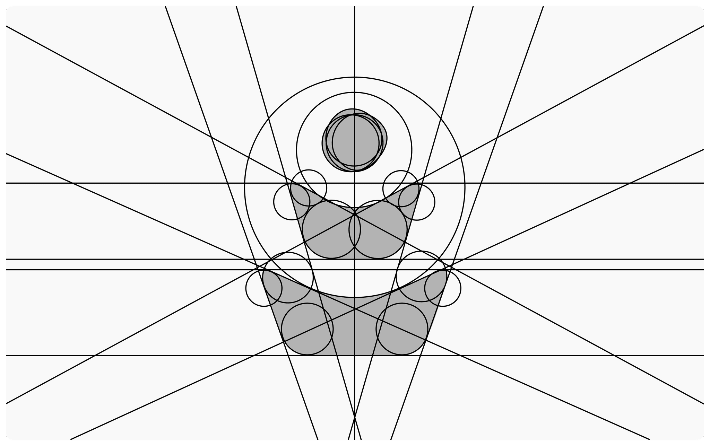
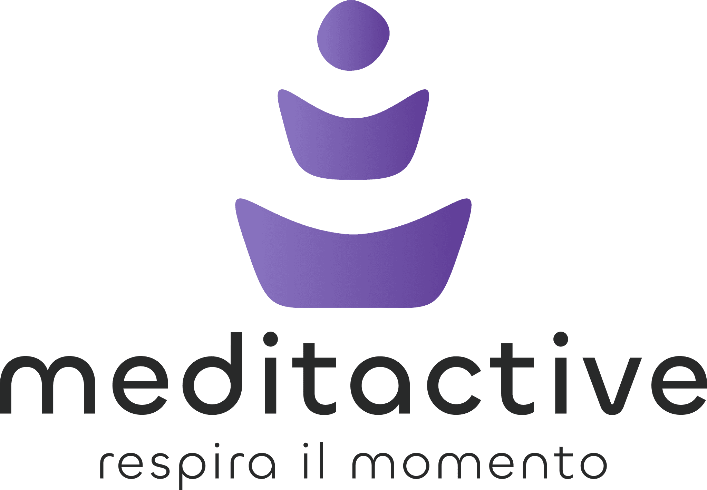
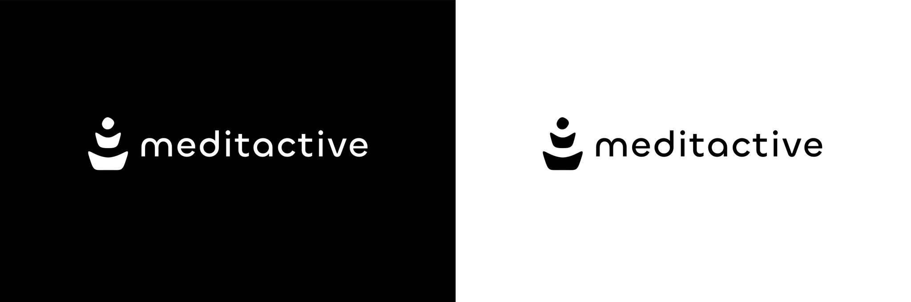
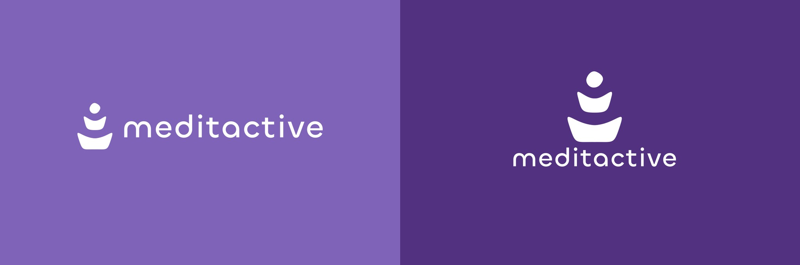
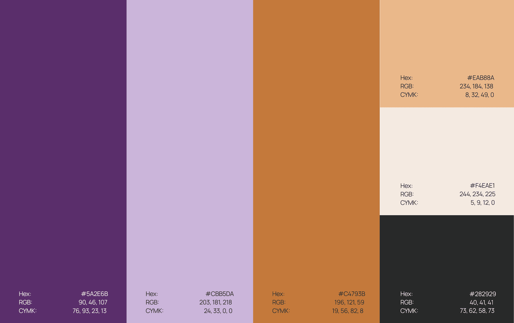
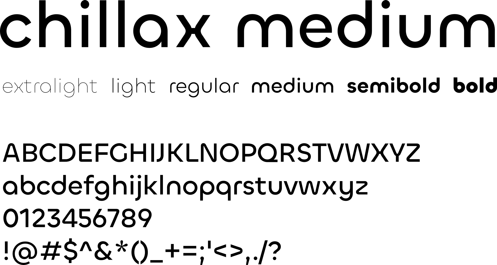
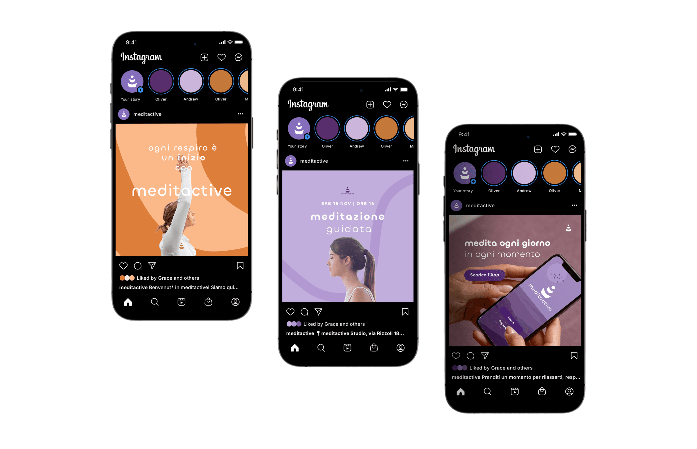

Brand
Un modo diverso di raccontare il benessere
MeditActive nasce dall'idea che prendersi cura di sé possa far parte della vita di tutti i giorni, anche attraverso piccoli gesti.
Il brand unisce la tranquillità della meditazione e l'energia del movimento. Il mio obiettivo era trovare un modo per rappresentare entrambi, senza ricorrere alla solita estetica dei brand dedicati al benessere.
Sfida
Calma e movimento, nello stesso segno
Un logo troppo statico avrebbe raccontato soltanto la meditazione. Uno troppo dinamico avrebbe rischiato di perdere quella sensazione di calma che volevo mantenere.
Cercavo una soluzione semplice e riconoscibile, che funzionasse sia nelle grafiche social sia nelle dimensioni più piccole di un'icona.
The design challenge
How can I create a visual identity that combines the calm of meditation with the energy of movement, without relying on the usual wellness clichés?
The design challenge
How can I create a visual identity that combines the calm of meditation with the energy of movement, without relying on the usual wellness clichés?
Concept
Tre forme, un solo equilibrio
Per il logo ho esplorato diverse soluzioni, partendo da forme geometriche e passando poi a linee più morbide.
Mi interessava capire come rappresentare l'equilibrio senza disegnare qualcosa di troppo letterale.
Alla fine ho scelto di lavorare con tre forme essenziali, disposte una sopra l'altra. Insieme creano un segno che richiama una figura in equilibrio, lasciando spazio a più interpretazioni.
Ho mantenuto le forme semplici anche per un motivo pratico: volevo che il simbolo rimanesse riconoscibile quando viene utilizzato da solo, senza il nome del brand.


Sistema visivo
Dal logo al resto dell'identità
Una volta definito il logo, ho iniziato a costruire il resto dell'identità visiva.
Per colori e tipografia ho cercato elementi che si abbinassero al simbolo e che funzionassero bene insieme, mantenendo uno stile coerente.
Logo
Ho preparato diverse versioni del logo: orizzontale, verticale e monocromatica.
In questo modo il marchio può adattarsi a sfondi, formati e spazi differenti, mantenendo sempre la stessa identità.
Esiste in versione verticale, orizzontale e monocromatica, per restare leggibile su qualsiasi sfondo.


Palette
Per i colori ho scelto di affiancare due tonalità di viola a due tonalità di arancione.
Il viola mi sembrava adatto a trasmettere tranquillità e concentrazione. L'arancione aggiunge invece una parte più calda ed energica, legata al movimento.
Ho completato la palette con due colori neutri, utili per mantenere equilibrio e leggibilità nelle composizioni.

Tipografia
Per la tipografia ho scelto Chillax.
Mi piacevano le sue forme morbide e il modo in cui si abbinavano al simbolo. Ho utilizzato i diversi pesi del carattere per creare gerarchie visive senza introdurre altri font.
Volevo che anche la tipografia contribuisse a rendere l'identità semplice e riconoscibile.

Applicazioni
Un'identità che funziona anche sui social
Dopo aver definito il logo, i colori e la tipografia, ho applicato l’identità visiva di MeditActive a diverse grafiche per Instagram, Facebook e YouTube.
Ho lavorato su contenuti differenti, dalla presentazione del brand alla promozione di un evento e dell’app, cercando di mantenere uno stile riconoscibile in ogni formato.

Dare coerenza a ogni dettaglio
Questo progetto mi ha fatto capire che creare un'identità visiva non significa soltanto disegnare un logo.
La parte più interessante è stata capire come far funzionare insieme simbolo, colori e tipografia, e come adattarli a formati diversi senza perdere coerenza.
Ho imparato a guardare ogni elemento come parte di un insieme, invece che come una scelta a sé.
A mente fredda
Prossimi passi
Un’identità anche fuori dallo schermo
Finora ho esplorato soprattutto le applicazioni digitali del brand. Mi piacerebbe capire come l’identità di Meditactive potrebbe funzionare anche su supporti fisici e in contesti diversi, per verificarne davvero la flessibilità.
Mettere alla prova il simbolo
Un passo successivo sarebbe osservare il comportamento del logo nelle dimensioni più piccole o nei casi in cui compare da solo, senza il logotipo. Vorrei capire meglio fino a che punto riesca a mantenere riconoscibilità e personalità.
Più libertà nelle composizioni
Mi piacerebbe sperimentare di più sul fronte delle composizioni, soprattutto per i touchpoint social e promozionali. L’obiettivo sarebbe ampliare il linguaggio visivo mantenendo comunque una forte coerenza di brand.
Nuove consapevolezze
Non serve raccontare tutto in un simbolo
Durante il progetto ho capito che un’identità visiva non ha bisogno di essere didascalica per risultare efficace. Anche un segno semplice può comunicare molto, se è costruito con intenzione e inserito in un sistema coerente.
Il colore ha un ruolo, non solo un’estetica
Lavorare sulla palette mi ha fatto riflettere sul fatto che il colore non serve solo a rendere un brand piacevole, ma contribuisce a definirne il tono, l’energia e il tipo di relazione che instaura con le persone.
Anche la tipografia racconta il brand
Questo progetto mi ha ricordato quanto la tipografia partecipi alla costruzione di un’identità. Non è solo una scelta funzionale: contribuisce a dare ritmo, voce e riconoscibilità all’intero sistema visivo.